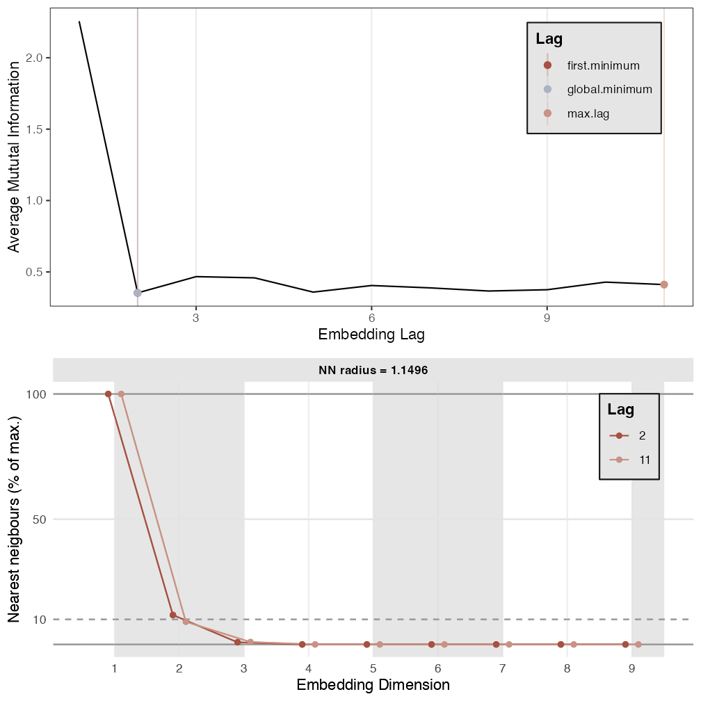
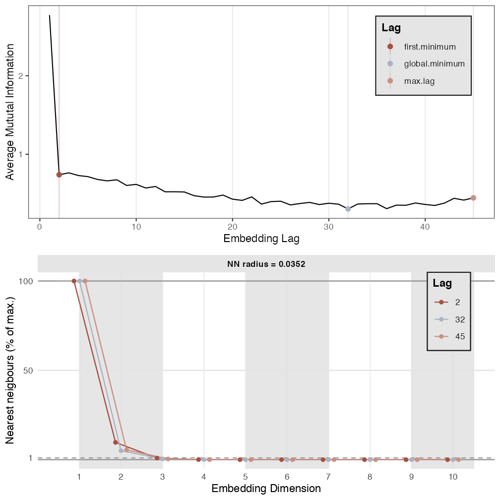
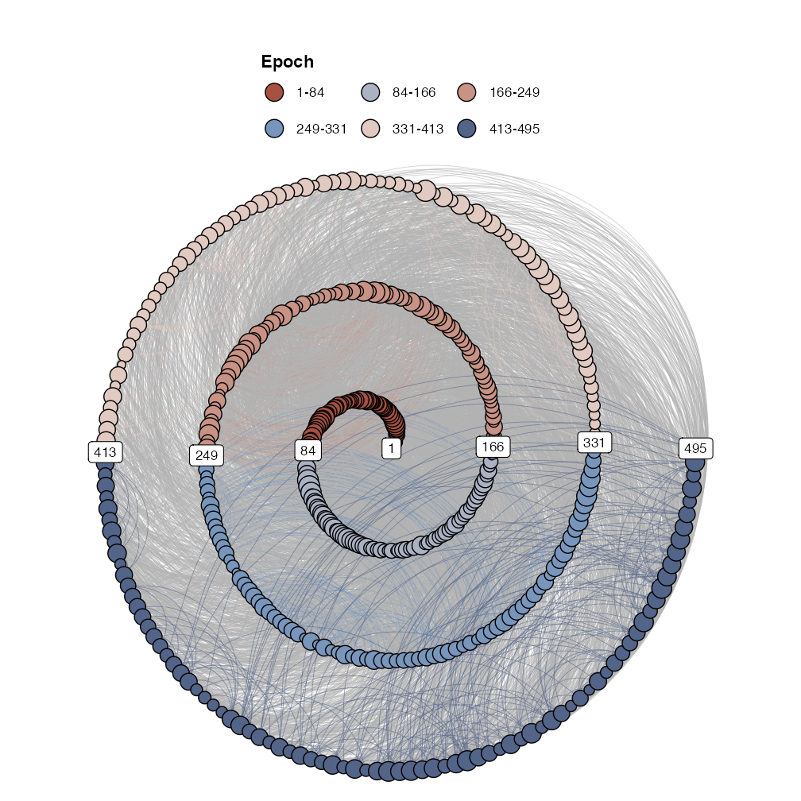

Recurrence Networks
A recurrence network is a representation of a recurrence matrix as a graph (a network). The nodes in the network represent time points, and if a value at any point in time will recur at some later point in time, an edge is drawn between the time points.
Recurrence Networks
Recurrence networks are graphs created from a recurrence matrix. This means the nodes of the graph represent time points and the connections between nodes represent a recurrence relation betwen the values observed at those time points. That is, often the matrix represents recurrences in a reconstructed state space, the values are coordinates and therefore we would say the edges of a recurrence network represent a temporal relation between recurring states. The ultimate reference for learning everything about recurrence networks is:
Package casnet has some functions to create recurrence networks, they are similar to the functions used for CRQA: * rn() is very similar to rp(), it will create a matrix based on embedding parameters. One difference is the option to create a weighted matrix. This is a matrix in which non-recurring values are set to 0, but the recurring values are not replaced by a 1, the distance value is retained and acts as an edge-weight * rn_plot() will produce the same as rp_plot()
We can turn the recurrence matrix into an adjecency matrix, an igraph object. This means we can use all the igraph functions to calculate network measures.
library(igraph)
library(qgraph)
#> Registered S3 methods overwritten by 'huge':
#> method from
#> plot.sim BDgraph
#> print.sim BDgraph
# Reload the data we used earlier
series <- rio::import("https://github.com/complexity-methods/CSA-assignments/raw/master/assignment_data/BasicTSA_arma/series.xlsx")
# Lets use a shorter dataset to speed things up
series <- series[1:500,]We’ll analyse the three time series as a recurrence network: * Compare the results, look at the SMall World Index and other measures - Remember: TS_1 was white noise, TS_2 was a sine with added noise, TS_3 was the logistic map in the chaotic regime. * Note that some of the RQA measures can be exactly calculated from the measures of the network representation. - Try to understand why the Recurrence is reprented as the *degree centrality() of the network (igraph::centr_degree())
TS 1


# By passing emRad = NA, a radius will be calculated
RN1 <- casnet::rn(y1 = series$TS_1, emDim = 7, emLag = 2, emRad = NA, targetValue = .01)
#>
#> Auto-recurrence: Setting diagonal to (1 + max. distance) for analyses
#>
#> Searching for a radius that will yield 0.01 for RR
casnet::rn_plot(RN1)
# Get RQA measures
rqa1 <- rp_measures(RN1)
#>
#> ~~~o~~o~~casnet~~o~~o~~~
#>
#> Global Measures
#> Global Max.rec.points N.rec.points Recurrence.Rate Singular.points
#> 1 Recurrence Matrix 236682 2368 0.01000499 2348
#> Divergence Repetitiveness Anisotropy
#> 1 0.3333333 4.65 1
#>
#>
#> Line-based Measures
#> Line.based N.lines N.points.on.lines Measure Rate Mean Max
#> 1 Diagonal 8 20 Determinism 0.008445946 2.500000 3
#> 2 Vertical 45 93 V Laminarity 0.039273649 2.066667 3
#> 3 Horizontal 45 93 H Laminarity 0.039273649 2.066667 3
#> Entropy.of.lengths Relative.entropy CoV.of.lengths
#> 1 0.6931472 0.11204717 0.2138090
#> 2 0.2449300 0.03959291 0.1220625
#> 3 0.2449300 0.03959291 0.1220625
#>
#> ~~~o~~o~~casnet~~o~~o~~~
# knitr::kable(rqa1,digits = 2) %>%
# kable_styling() %>%
# scroll_box(width = "100%", height = "100px")
g1 <- igraph::graph_from_adjacency_matrix(RN1, mode="undirected", diag = FALSE)
igraph::V(g1)$size <- igraph::degree(g1)
g1r <- casnet::make_spiral_graph(g1,arcs = arcs, epochColours = getColours(arcs), markTimeBy = TRUE)
# Network measures
igraph::average.path.length(g1)
#> [1] 4.242546
igraph::transitivity(g1)
#> [1] 0.3158716
qgraph::smallworldness(g1)
#> smallworldness trans_target averagelength_target
#> 6.58852674 0.31587164 215.96216865
#> trans_rnd_M trans_rnd_lo trans_rnd_up
#> 0.04095559 0.03226366 0.05099870
#> averagelength_rnd_M averagelength_rnd_lo averagelength_rnd_up
#> 184.48819795 181.75003507 194.22761473
recs1 <- igraph::centr_degree(g1)
(RP_N <- sum(recs1$res))
#> [1] 2368
rqa1$RP_N
#> [1] 2368
RP_N / recs1$theoretical_max
#> [1] 0.01000499
rqa1$RR
#> [1] 0.01000499TS 2


RN2 <- rn(y1 = series$TS_2, emDim = 7, emLag = 2, emRad = NA, targetValue = 0.01)
#>
#> Auto-recurrence: Setting diagonal to (1 + max. distance) for analyses
#>
#> Searching for a radius that will yield 0.01 for RR
rn_plot(RN2)
# Get RQA measures
rqa2 <- rp_measures(RN2)
#>
#> ~~~o~~o~~casnet~~o~~o~~~
#>
#> Global Measures
#> Global Max.rec.points N.rec.points Recurrence.Rate Singular.points
#> 1 Recurrence Matrix 236682 2368 0.01000499 2270
#> Divergence Repetitiveness Anisotropy
#> 1 0.1428571 1.989796 1
#>
#>
#> Line-based Measures
#> Line.based N.lines N.points.on.lines Measure Rate Mean Max
#> 1 Diagonal 28 98 Determinism 0.04138514 3.500000 7
#> 2 Vertical 93 195 V Laminarity 0.08234797 2.096774 4
#> 3 Horizontal 93 195 H Laminarity 0.08234797 2.096774 4
#> Entropy.of.lengths Relative.entropy CoV.of.lengths
#> 1 1.2326433 0.19925666 0.5687769
#> 2 0.3256454 0.05264055 0.1582481
#> 3 0.3256454 0.05264055 0.1582481
#>
#> ~~~o~~o~~casnet~~o~~o~~~
# knitr::kable(rqa2,digits = 2) %>%
# kable_styling() %>%
# scroll_box(width = "100%", height = "100px")
g2 <- graph_from_adjacency_matrix(RN2, mode="undirected", diag = FALSE)
V(g2)$size <- degree(g2)
g2r <- casnet::make_spiral_graph(g2,arcs = arcs,epochColours = getColours(arcs), markTimeBy = TRUE)
# Network measures
average.path.length(g2)
#> [1] 9.696495
transitivity(g2)
#> [1] 0.3422773
smallworldness(g2)
#> smallworldness trans_target averagelength_target
#> 11.01646242 0.34227726 77.69775479
#> trans_rnd_M trans_rnd_lo trans_rnd_up
#> 0.02332129 0.01651187 0.03027692
#> averagelength_rnd_M averagelength_rnd_lo averagelength_rnd_up
#> 58.32103341 55.86757793 68.90025215
recs2 <- centr_degree(g2)
(RP_N <- sum(recs2$res))
#> [1] 2368
rqa2$RP_N
#> [1] 2368
RP_N / recs2$theoretical_max
#> [1] 0.01000499
rqa2$RR
#> [1] 0.01000499TS 3

RN3 <- rn(y1 = series$TS_3, emDim = 7, emLag = 8, emRad = NA, targetValue = 0.01)
#>
#> Auto-recurrence: Setting diagonal to (1 + max. distance) for analyses
#>
#> Searching for a radius that will yield 0.01 for RR
rn_plot(RN3)
# Get RQA measures
rqa3 <- rp_measures(RN3)
#>
#> ~~~o~~o~~casnet~~o~~o~~~
#>
#> Global Measures
#> Global Max.rec.points N.rec.points Recurrence.Rate Singular.points
#> 1 Recurrence Matrix 202950 2030 0.01000246 1852
#> Divergence Repetitiveness Anisotropy
#> 1 0.25 0.08988764 1
#>
#>
#> Line-based Measures
#> Line.based N.lines N.points.on.lines Measure Rate Mean Max
#> 1 Diagonal 84 178 Determinism 0.087684729 2.119048 4
#> 2 Vertical 8 16 V Laminarity 0.007881773 2.000000 2
#> 3 Horizontal 8 16 H Laminarity 0.007881773 2.000000 2
#> Entropy.of.lengths Relative.entropy CoV.of.lengths
#> 1 0.3680479 0.0602444 0.1853902
#> 2 0.0000000 0.0000000 0.0000000
#> 3 0.0000000 0.0000000 0.0000000
#>
#> ~~~o~~o~~casnet~~o~~o~~~
# knitr::kable(rqa3,digits = 2) %>%
# kable_styling() %>%
# scroll_box(width = "100%", height = "100px")
g3 <- graph_from_adjacency_matrix(RN3, mode="undirected", diag = FALSE)
V(g3)$size <- degree(g3)
g3r <- casnet::make_spiral_graph(g3,arcs = arcs ,epochColours = getColours(arcs), markTimeBy = TRUE)
average.path.length(g3)
#> [1] 6.094221
transitivity(g3)
#> [1] 0.3300908
smallworldness(g3)
#> smallworldness trans_target averagelength_target
#> 28.606300246 0.330090791 13.959812762
#> trans_rnd_M trans_rnd_lo trans_rnd_up
#> 0.010432555 0.004539559 0.016861219
#> averagelength_rnd_M averagelength_rnd_lo averagelength_rnd_up
#> 12.621139453 12.063679231 19.894420448
recs3 <- centr_degree(g3)
(RP_N <- sum(recs3$res))
#> [1] 2030
rqa3$RP_N
#> [1] 2030
RP_N / recs3$theoretical_max
#> [1] 0.01000246
rqa3$RR
#> [1] 0.01000246Multiplex Recurrence Networks
Consider the three time series to be part of a multi-layer recurrence network. Common properties of the multiplex network are multi-layer mutual information and edge overlap.
# Inter-layer Mutual Information
(interlayer_mi12 <- mi_interlayer(g1,g2))
#> [1] 2.20549
#> attr(,"miType")
#> [1] "inter-layer mutual information"
(interlayer_mi13 <- mi_interlayer(g1,g3))
#> [1] 1.666615
#> attr(,"miType")
#> [1] "inter-layer mutual information"
(interlayer_mi23 <- mi_interlayer(g2,g3))
#> [1] 2.155163
#> attr(,"miType")
#> [1] "inter-layer mutual information"
# mean I-L MI
mean(c(interlayer_mi12,interlayer_mi13,interlayer_mi23))
#> [1] 2.009089
# Edge Overlap
(edge_overlap12 <- length(E(g1 %s% g2)) / (length(E(g1))+length(E(g2))))
#> [1] 0.003800676
(edge_overlap13 <- length(E(g1 %s% g3)) / (length(E(g1))+length(E(g3))))
#> [1] 0.005457026
(edge_overlap23 <- length(E(g2 %s% g3)) / (length(E(g2))+length(E(g3))))
#> [1] 0.004092769
# mean EO
mean(c(edge_overlap12,interlayer_mi13,interlayer_mi23))
#> [1] 1.275193
# Overall Edge Overlap
(eo_all <- length(E(intersection(g1,g2,g3))))
#> [1] 0
#(eo_mean <- eo_all / (edge_overlap12+edge_overlap13+edge_overlap23))